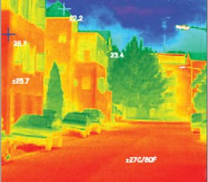
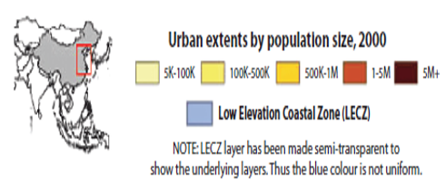
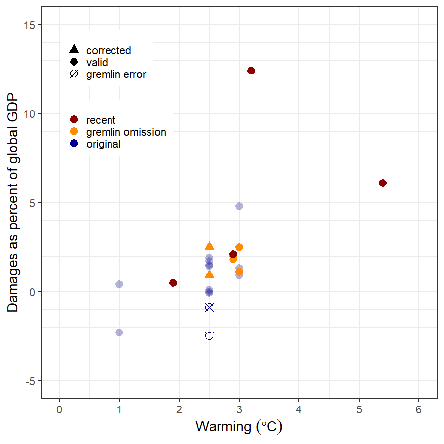

Impacts of Climate Change
Part 2
EES 3310/5310
Global Climate Change
Jonathan Gilligan
Class #22: Spring 2021
Urban Heat Islands

Source: Environmental Protection Agency
Urban Heat Islands in the United States

Urban Heat Mortality
Chicago, 1995

Source: USGCRP, The Impacts of Climate Change on Human Health in the United States: A Scientific Assessment (2016).
Socioeconomic Status and Vulnerability to Heat
- LST = Urban heat island effect
- EHVI = extreme heat vulnerability index
- EHVI correlates very strongly with socioeconomic variables

Source: D.P. Johnson et al., Appl. Geography 35, 23 (2012).
Climate Change and Deadly Heat

Source: C. Mora et al., Nature Climate Change 7, 501 (2017)
More than Deaths
- In the South, many people work outside
- Construction, farming, logging, etc.
- Summer heat waves could make it dangerous to be physically active outdoors
- Loss of working hours, lower economic productivity, less money

Severe Heat Waves
- Severe heat waves even with serious emission reductions.

K. Dahl et al., Environ. Res. Commun. 1, 075002 (2019), doi:10.1088/2515-7620/ab27cf
Football Practice in Heat
Football practice health/safety rules:
- Heat index of 104 or more is considered dangerous
- Constant observation and supervision for overheating
- No pads or equipment
- 5 minutes mandatory rest and water break every 15 minutes
- After 2070:
- Average of 3 weeks per year in Southeast & Midwest
- 2 months per year in Texas, Louisiana, Southern Florida

Photo credit: Nathaniel Rutherford/RTI
Sea-Level Rise
- Sea level rise is causing increasing flooding in coastal cities
- “King tides” in Miami are flooding the city even in good weather.
- When hurricanes come, storm surges are higher and more destructive

Low-Elevation Coastal Zone

|
 |
Peterman Glacier 2011

Antarctica

GRACE Satellite

Image credit: NASA
Ice loss

Image credit: IMBIE Team, Nature 558, 219 (2018) doi: 10.1038/s41586-018-0179-y
How much damage?

Source: R.S.J. Tol, J. Econ. Perspect. 23, 29 (2009). doi:10.1257/jep.23.2.29
- Note benefits at 1.0 and 2.5 degrees…
Oops! Gremlins!
“Gremlins intervened in the preparation of my paper … minus signs were dropped from the two impact estimates …”
R.S.J. Tol, J. Econ. Perspect. 28, 221 (2014) doi: 10.1257/jep.28.2.221

- Global warming was worse than Tol thought:
- Two studies that found net harm from global warming were reported as net benefits.
- Four studies that found net harm were simply omitted.
- Then, in 2015, more Gremlins:
- numbers were not even calibrated correctly.
Damages from Warming


More Recent Work


M. Burke et al., Nature 527, 235 (2015). doi:10.1038/nature15725
Global Warming is Already Affecting Economic Inequality

N.S. Diffenbaugh & M. Burke, Proc. Nat’l Acad. Sci. 116, 9808 (2019) 10.1073/pnas.1816020116
Hurricane Expert Kerry Emanuel

- Many hurricanes in Atlantic Ocean
- Only a small fraction hit the US coast
- Clear trend toward more hurricane activity in North Atlantic
- Suppose bear population in woods was rising sharply…
- Should hikers wait for clear increase in bear attacks before taking precautions?